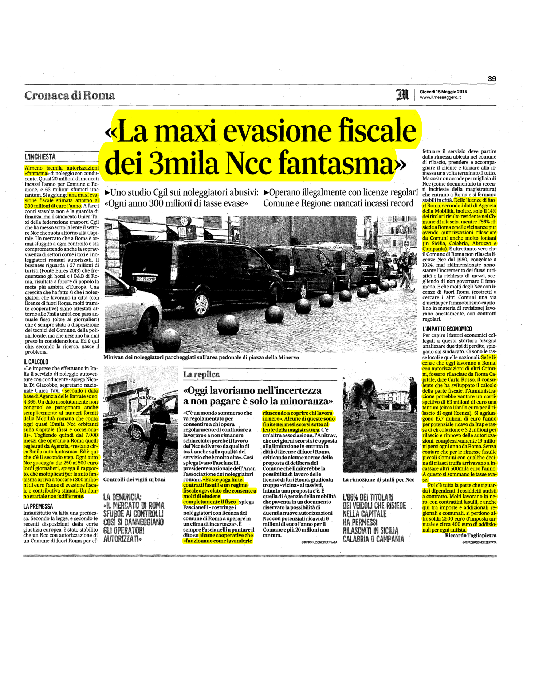
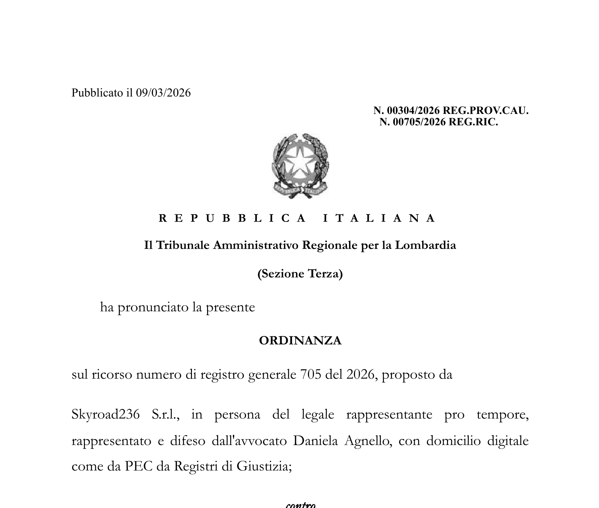

Milano · 10 giugno 2026 · ore 14:00 · Spazio Kolbe — Viale Corsica 68
BASTA
ABUSIVISMO
Quindici anni di attività, dieci di metodo Firenze.
Non buoni propositi: atti e risultati verificabili.
Relatori
Claudio Giudici · Alessandro Genovese · Marco Morana · Lapo Lemmi
Dove tutto è cominciato
2011 · L'intuizioneUna volontà precisa, in anticipo sui tempi: non solo denunciare l'abusivismo, ma costruire un metodo che produca atti.
2013 · Le prime azioni strutturateCon l'avvocata Maddalena D'Aprile e la dottoressa Giacinta Bucchi prende forma la struttura legale e amministrativa.
2014 — già sulla stampa nazionale. La nostra analisi su evasione e danno erariale. Dieci anni dopo, è ancora la base delle inchieste nazionali.
2014 · La stampa nazionale
Quando ancora non ci credeva nessuno,
era già sui giornali.
Evasione fiscale e danno erariale degli NCC fantasma: un'analisi diventata, dieci anni dopo, la base delle inchieste nazionali.
«La maxi evasione fiscale dei 3mila NCC fantasma» — Il Messaggero, 15 maggio 2014.

Il Messaggero
15.05.2014
'">
Il Messaggero · 15 maggio 2014
Dove tutto stava per cambiare
2017
Una telefonata a uno dei maggiori rappresentanti della categoria. Ci derideva, perché insistevamo sugli atti, sulle carte, sui protocolli. Poi ha scelto un percorso che non condividiamo.
“Allora ci derideva.”
Il punto
Il vostro problema
non è l'NCC.
È chi vi dice che la legge è «ondivaga».
Chi lo dice manca di rispetto a voi — e smentisce gli organi della Repubblica, che dicono l'esatto contrario: la legge c'è, è chiara, e va applicata.
Corte Costituzionale
Il vincolo territoriale è legittimo (56/2020 · 163/2025).
Consiglio di Stato
Riconosce alle associazioni il diritto di agire e di far applicare la legge (9672/2023).
TAR Toscana
Le foto valgono come prova (263/2023); decadenze e revoche confermate.
Non una protesta
La macchina giuridica.
Ogni passaggio è un atto protocollato, opponibile, verificabile.
1
SEGNALAZIONE
dal territorio›2
ISTANZA
verifica e controllo›5
ESPOSTO
autorità superiori
Protocolli, PEC, giurisprudenza. Non proteste. Se il Comune non agisce, ogni atto diventa la base del successivo: fino alla responsabilità penale, civile ed erariale del funzionario inerte.
Un caso reale · Almè (BG), alle porte di Milano
Dal «non siete legittimati»
agli atti. In tre mesi.
Febbraio · l'arroganzaIl Comune respinge: «soggetto privato», la vigilanza «non si piega a interessi privati, ancorché legittimi». Nega perfino l'accesso ai controlli.
MarzoRisposta solo formale: serve a dire «il riscontro c'è stato». Nel merito, nulla.
Aprile · cambia tonoLa svolta: convocazione del titolare, ispezione della rimessa, fogli di servizio, subdeleghe a Milano e Rozzano.
29 maggio · il risultatoViolazioni accertate: rimessa inesistente, servizio fuori regola. Atti trasmessi ai SUAP.
Prima sprezzante, poi il cambio di tono: il Comune ha fatto ciò che la giustizia amministrativa della Repubblica prevede in questi casi. Nessuna protesta — solo atti, uno dietro l'altro.
Il caso Almè · come ti trattano, e come finisce
Prima ti trattano da niente.
Poi si piegano.
Febbraio · il tono sprezzante«Siete un soggetto privato: la vostra istanza non genera obbligo di pronuncia.» «La vigilanza non si piega a interessi privati, ancorché legittimi.» E vi negano perfino l'accesso ai controlli. Sul veicolo segnalato: nulla.
29 maggio · la resaLo stesso Comune accerta le violazioni — rimessa inesistente, servizio fuori regola — e trasmette gli atti ai SUAP. Punto per punto, esattamente ciò che chiedevamo dal 10 febbraio.
Da chi ti liquida come «privato qualunque» a chi fa ciò che la legge impone. L'arroganza non regge davanti agli atti: si piega. Ogni volta.
Chi fa davvero questo lavoro
Non è il titolo.
È la pratica, ogni giorno.
Come per un chirurgo
Non è la laurea a fare il bravo chirurgo: è la sala operatoria, ogni giorno. Anche l'avvocato più competente, se non fa questo lavoro con scadenza quotidiana, commette gli errori tipici di chi non lo fa.
Noi, in sala operatoria da 15 anni
Segnalazioni, istanze, diffide, esposti, protocolli: ogni giorno. Un'esperienza che non si improvvisa e non si delega a un solo studio legale. È un lavoro di categoria.
Sullo stesso tavolo, la P.A. distingue subito una missiva di alto livello da una debole: la seconda offre al Comune l'appiglio per cavarsela — e al noleggiatore di continuare l'abuso.
Dati al 5 giugno 2026 · verificabili atto per atto
I numeri.
10
anni di metodo Firenze, su quindici di attività (2011–2026)
200+
comuni trattati dal 2012, dalla Sicilia alla Lombardia
250+
atti prodotti negli ultimi 5 mesi
44
casi negli ultimi 6 mesi (definitivi + in corso)
Nato dall'esperienza e cresciuto esponenzialmente a Firenze, oggi il metodo apre procedimenti anche in Lombardia: Como, Saronno, Trescore Cremasco. Ogni revoca è documentata caso per caso.
Non è questione di soldi · è questione di giustizia
Cosa vi stanno
portando via.
365
giorni l'anno, H24, su più turni: l'auto di una società non si ferma mai. Ogni giorno corse tolte a chi rispetta le regole.
Non va a un collega: va a società di capitali e multinazionali. È lavoro che esce dalle famiglie di chi rispetta le regole.
Lo dice la legge (L. 21/1992), lo conferma la Corte Costituzionale, lo applica il Consiglio di Stato. Rimettere ogni titolo dentro le regole vuol dire riportare quel lavoro dalle multinazionali alle famiglie dei tassisti.
Il cerchio si chiude
Le sentenze che contano.
Legittimazione attivaCdS 9672/2023
Il Consiglio di Stato riconosce a URITAXI e FILT CGIL il diritto di stare in giudizio per la categoria. Da soli no. Insieme sì.
Vincolo territorialeCorte Cost. 56/2020 · 163/2025
La Consulta conferma che il vincolo è legittimo. I controlli sono “presidi adeguati”, non burocrazia.
Le foto sono provaTAR Toscana 263/2023
Il TAR indica alle associazioni le fotografie come prova dei veicoli NCC fuori territorio.
Anche fuori dalla ToscanaTAR Calabria 538/2023
Locri (RC): ricorso dell'NCC respinto, revoca confermata. URITAXI e U.N.I.C.A. intervenute e vittoriose.
«...le associazioni potrebbero ricorrere a molti altri mezzi di prova, quali ad esempio delle fotografie...» — TAR Toscana 263/2023, pag. 4
TAR Toscana
Nove pronunce.
Tutte nella stessa direzione.
337/2022 · Lucca — NCC non è taxi
339/2022 · Lucca — NCC non è taxi
263/2023 · Firenze — le foto sono prova
740/2025 · Scarperia e San Piero — decadenza
396/2026 · Marciana — decadenza
875/2026 · Montepulciano — decadenza
888/2026 · Capalbio — revoca
903/2026 · Marciana — ricorsi respinti
1104/2026 · Villafranca in Lunigiana — revoca
Sette esiti favorevoli solo nel biennio 2025–2026. Confermano ciò che sapevamo essere vero. Da anni.
Il caso Marciana · Isola d'Elba
Cade il primo tassello.
Parte la reazione a catena.
Dall'esposto URITAXI e FILT CGIL alle revoche confermate dal TAR: quando cade il primo titolo documentale, decadenze ed esclusioni dai bandi proseguono di territorio in territorio.
Toscana e oltre · dati dai fascicoli, verificabili comune per comune
2026 — I casi, a scendere.
Proprio qui
Uber è stata
fermata a Milano.
Trib. Milano 8359/2015
UberPop bloccata: concorrenza sleale verso i taxi.
TAR Lombardia 860/2016
Lo strumento tecnologico non cancella le regole del trasporto non di linea.
Uber non può fornire servizi a un NCC in sosta sulla pubblica via: lo smartphone non è una sede, né una rimessa.
La legge è la stessa ovunque: L. 21/1992. Milano lo ha già dimostrato.
Da soli no. Insieme sì.
CdS 9672/2023: il singolo tassista non è ammesso nemmeno al TAR. L'associazione sì.
Il metodo, subito
Modelli collaudati dal 2012, pronti per Milano.
Una squadra rodata
Non si parte da zero: quindici anni di esperienza.
Risultati misurabili
Ogni caso ha protocollo, data, esito: si verifica, non si racconta.
Dividersi adesso fa un favore solo a chi specula sull'abuso, e confonde la Pubblica Amministrazione. Un fronte solo, una linea sola: al Comune non resta nessuna scappatoia.
FILT CGIL Taxi · Taxi Service Milano · UGL Taxi Milano · URITAXI Milano
I prossimi dieci anni
Dove arriveremo.
Milano, subitoI primi atti sui casi più gravi che ci segnalerete oggi.
La rete lombardaCollegare i procedimenti aperti — Como, Saronno, Trescore Cremasco — in un fronte regionale.
Lo standard nazionaleUn metodo replicabile, città per città, finché l'abusivismo non conviene più a nessuno.
|
Lo stesso metodo · una squadra che cresce, città dopo città
Da Firenze.
A tutta Italia.
Non dovete segnalarci nulla · ci stiamo già lavorando
In Lombardia non si parte
da zero.
Il caso Como · SkyRoad236 S.r.l.Su nostra segnalazione, il Comune di Como ha negato il trasferimento dell'autorizzazione NCC n. 33 a una società di capitali — il meccanismo con cui si accumulano i titoli e si aggira il controllo sul territorio.
TAR Lombardia, Sez. III, ord. 304/2026 (RG 705/2026): il diniego non è stato sospeso. Il titolo non si è trasferito; merito fissato al 25 settembre 2026.

Ordinanza TAR Lombardia
304/2026 · RG 705/2026
'">
TAR Lombardia · ord. 304/2026 · RG 705/2026
L'idea, concreta
Un ufficio legale della categoria.
Per mano dei tassisti.
Nato da tassisti e sindacati veri, con un solo interesse: difendere il lavoro. Non un interesse economico, non chi tiene il piede in due staffe.
Quello che serviva davvero
Il presidio stabile che qualcuno avrebbe dovuto costruire e non ha costruito. Oggi c'è.
Contro ogni attacco
Difende il diritto al lavoro del tassista da ogni minaccia, oggi e domani.
Una rotta che non si ferma
Partiti da Firenze → Ravenna e Riccione → oggi Milano. Prossimo sbarco: Roma.
Si sostiene con iscritti e fondi della categoria: non denaro sprecato in studi legali esterni, ma un ufficio dedicato — poche persone che fanno solo questo, difendere il vostro lavoro.
La proposta, oggi
Unitevi al fronte.
Il metodo è già al lavoro.
Non dovete segnalarci nulla: in Lombardia abbiamo già cominciato. A Milano partite avvantaggiati.
Modulo di adesione in sala — la vostra presenza fa la differenza.
Inquadra: rivedi e condividi · slide.gaaitalia.org
Non una protesta, né una proposta senza esperienza.
Una macchina già pronta.
Annunciare un percorso è facile. Averlo già percorso — con le sentenze in mano — è un'altra cosa.
Per questo nasce l'ufficio legale della categoria, per mano dei tassisti: il vostro presidio contro ogni attacco, oggi e domani. Milano oggi, Roma domani.
Competenza · Conoscenza · Strategia · Logica
Il vantaggio vero · non solo conoscenza, capacità di integrazione
Siamo anni avanti.
Un solo sistema che integra giurisprudenza, dati del territorio, modelli di atti e scadenze: ciò che ad altri richiede mesi, da noi è già pronto. Non si improvvisa, e non si copia in fretta.